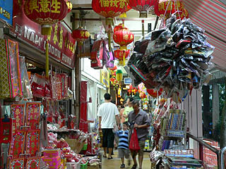
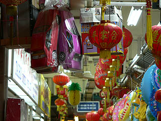
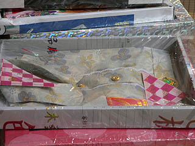
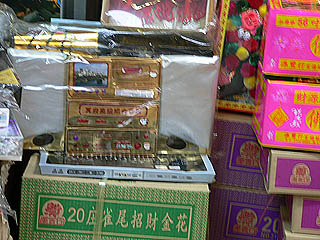

ブギスの仏具屋街
Bugis
シンガポール中心部の北に位置するブギスはたくさんの人が集まるシンガポール指折りの繁華街だ。
オーチャードロードやシティホールといった「清潔なシンガポール」とはまた違った雑多なアジアらしい顔を見せてくれる街の一画に観音堂KwanImTongHoodCheがある。
繁華街のど真ん中にある寺院だけあって狭い境内にはたくさんの参拝者がひしめいていた。
普通のお寺なので特筆すべき点はないので写真はないです。スミマセン。
観音堂の近くはデパートやショッピングセンターが隣から隣へと並んでおり、歩行者専用の道路には屋台が並んでいる。
何の気なしに歩いていると、その屋台の一軒がお寺になっていた。これにはビックリ！
屋台のお寺なんて始めてみたぞ。路上のお寺には金の仏像が数体置かれていて参拝客が数人、その像に向かって拝んでいる。
どうも胡散臭いのと、怒られそうな気がしたので写真はないです。スミマセン。
・・・というわけで本題です。この一画には仏具屋が多い。
観音堂の近く星州神佛用品超級市場などは超級と名が付くだけあって（いや、スーパーマーケットっていう意味なんですけどね）、充実の品揃え。
様々な仏像や線香、供え物セットなど様々な中国系の仏具が売られていた。
一方、広い通りを渡ったローチョーセンターという団地の一階だけがお店になっている、まかり間違ってもショッピングセンターとは言い切れない、雑多な商店街のようなところの一画がまんま仏具屋街になっていて店の数が多いだけに、そっちの方が品揃え的には「超級」だったような気がする。
まあ、こんな感じですわ。

赤い提灯が店先まで張り出し目出たさ全開。千客万来、商売繁昌、家内安全、病魔退散・・・な感じです。
勿論、仏具屋だけに縁起物だけではない。

屋根から吊るされているのは家？車？
ハイ、おわかりですね。故人への供え物です。
以前、香港編でも触れたが、中国の華南地方では亡くなった人があの世で困らないように紙で作った様々な生活用品を燃やしてあの世に届けるというシステムが完備しているのだ。
つまりこの車を燃やしてあの世にデリバリーすれば、生前はチャリしか乗ってなかったお爺ちゃんもあの世では紫のベンツのオーナーになれる、と言う訳。
供え物の種類は実に豊富で、しかも妙なリアリティーがある。腕時計、髭剃り、シャンプーといった男の身だしなみセットから、雀牌、トランプ、一軒屋といった男のロマンセットまで。ちなみにシンガポールでは人口の90パーセントが団地住まいで、一戸建住宅は夢のまた夢らしい（タクシーの運転手談）。あの世くらいは一軒屋で生活したいものですな〜。
素敵なシャツ。でも紙で出来ているから着られないよ。

勿論、21世紀を迎えた現在だから当然携帯電話、パソコンも標準装備だ。
金色のパソコンに目が釘付け。

凄く欲しかったが、故人のための供え物なので持って帰ってはいけないモノだそうだ。
残念ながら見るだけに留めておいた。
仏具屋にはカッコイイ仏像や神像があって、財布の紐もユルユルになっていたのだが、あまりにも高くて手が出ませんでした。
仕方なくホログラムで浮き出る佛ステッカーとかそんなのばっか買っちゃいました。
次のスポットへGO！
馬来半島珍寺伝説
珍寺大道場 HOME